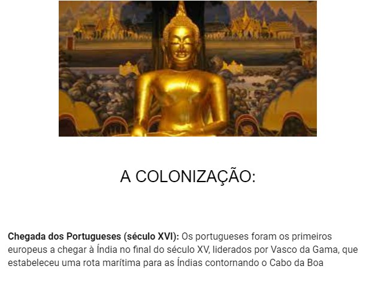

Perguntas e respostas Filme 1917:

Hablidades desenvolvidas: ???
Ojetivo da atividade: Assistir ao filme e responder 6 perguntas.
Assunto: GRANDE GUERRA
Comentário pessoal: A atividade em si não foi nada de mais, porém ver o filme foi muito bom, inclusive esse filme é perfeito.
Imperialismo no séc. XIX:
Hablidades desenvolvidas: ???
Ojetivo da atividade: Escolher um país que sofreu com o processo de colonização, após a 2ª Revolução Industrial e contar sua trajetória por meio de fotos, mapas e desenhos
Assunto: Neocolonialismo
Comentário pessoal: A atividade em si não foi nada de mais, porém foi legal aprender um pouco mais sobre a India.